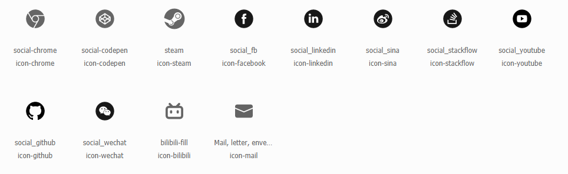

主题简介
Kaze是基于Hexo博客引擎的响应式主题，由 theme-kaze 开发维护
使用须知
文档并不包含所有配置项，其他选项请参考主题配置和 Hexo文档，如有配置上的其他疑问可以在issue中提出
安装主题
直接通过npm/yarn安装
在 Hexo 5.0 及以上版本中您可以直接通过输入
npm install hexo-theme-kaze直接安装主题
其他方式
如果您有其他需要可以在 your site/themes 下输入
git clone https://github.com/theme-kaze/hexo-theme-Kaze.git或者下载主题压缩包在 your site/themes 下解压，并且将 hexo-theme-kaze 重命名为 kaze
重命名为 kaze 是为了与通过 npm/yarn 下载保持一致性
持续升级
在Hexo5.0及以上版本中您可以在站点根目录中新建 _config.kaze.yml 进行自定义配置，具体优先级参见相关文档
在Hexo其他版本中您可以在站点目录 source 文件夹中新建 _data 文件夹并在期中新建
kaze_config.yml 复制主题配置文件的基本配置，然后就可以进行自定义配置，kaze-config.yml 设置优先于主题配置设置
之后直接采取 git pull 或覆盖主题目录等方式便可直接升级无需替换配置
请关注Release中的Breaking Changes会提示对配置造成不下兼容的改动 请自行更改
总体
多语言
主题支持i18n国际化，目前支持英文与简体中文，有其他语言支持可提交PR。在站点配置文件中找到language即可修改语言 language: en
设置英文，language: zh-CN 设置简体中文
懒加载
在主题配置选项 lazyload 中设置 enable: true 开启懒加载（默认开启）
loadingImg 中可以设置加载图，可以在post中设置 banner_img_set 进行覆盖实现缩略图效果
文件压缩
主题自带文件压缩，可以配合GZIP或其他优化手段提高网页访问速度，默认关闭，可以在
minify:
enable: false
css: true
js: true
html: true中进行配置
需要注意开启压缩后会影响 hexo g 的性能
主题颜色
本主题中大部分颜色都可以在主题配置选项 color 中进行配置
字号与字体
在主题配置选项 font 中可以设置 font-size 和 font-family
og meta 元素
Open graph 是由facebook推出的技术，可以帮助您在各类支持该技术的社交媒体上显示网页卡片
og:
enable: true
title: true
url: true
image: true
description: true
article: trueenable开启功能（默认开启）title… 请参见官网文档
静态资源
主题大部分第三方资源索引都可以在主题配置选项 cdn 中进行配置，可以自定义其他资源路径
动画
在主题配置文件中 animation config 调整主题动画效果，目前仅支持控制回到顶部动画的开关
图标
主题图标依赖于 iconfont，内置了一部分社交图标，您可以自定义其他icon文件或者解决方案来添加自定义图标
站点访问量统计
访问量统计目前仅支持不蒜子
footer:
statistics:
enable: false
type: busuanzi # now version only supports busuanzi
pv:
enable: true
style: 本站总访问量{}次 # the style will be shown as $1{pv}$2
uv:
enable: true
style: 本站总访客数{}次enable 开启访问量统计（默认关闭）
type 目前仅支持busuanzi
pv 访问总量统计
uv 用户总量统计
数据分析
analytics:
enable: false
type: google # google
google:
id: enable 开启分析支持（默认关闭）
type 目前仅支持 google
google.id 有关谷歌分析的具体使用说明和 id 使用可以参考谷歌文档
首页
文章头图
在文章 Front-matter 中 banner_img 可以设置首页头图
小组件
widgets:
showWidgetsMobiles: "none"showWidgetsMobiles : 在窄屏幕上是否显示小组件，none 关闭（默认），flex 开启
关于
关于页面需要自行创建，在站点 source 中新建 about 文件夹并在文件夹内创建 index.md，该文件至少需要包含
# at ${yoursite}/about/index.md
---
title: 关于
layout: about
---社交链接
在主题配置中
# about page config
about:
description: description
social_links:
- { icon: icon, link: your_links }
- ...more在主题配置文件中按如上格式填写 social_links 即可创建社交链接，icon 相关可以参见图标
友链
友链格式按如下填写即可生成友链页面
links:
example-name-1:
url: https://example.com
avatar: https://example.com/avatar.jpg
example-name-2:
url: https://example.com
avatar: https://example.com/avatar.jpg文章页
搜索功能
search:
enable: true
path: search.json
field: posts
searchContent: trueenable开启搜索功能（默认开启）path文件名称（暂无用处）field需要搜索的范围，支持 posts | pages | allsearchContent搜索文件是否包含正文内容（不建议开启，包含所有文章内容这样会使得搜索文件异常巨大）替代方案是搜索分类标签或使用algolia等第三方搜索服务（Todo）
目录
主题目录通过Hexo原生函数生成，具体可参见 文档
toc:
showListNumber: false
maxDepth: 6
minDepth: 1showListNumber 是否生成编号
maxDepth TOC最大深度
minDepth TOC最小深度
代码高亮
参见代码 高亮文档
数学公式
主题支持 mathjax 和 katex 两种渲染引擎，具体参见 相关文档
copyright
copyright:
enable: true
writer: # if writer is empty we will use config.author as writer
declare: 本博客所有文章除特别声明外，均采用<a target="_blank" rel="noopener" href="https://creativecommons.org/licenses/by-nc-sa/4.0/deed.zh">CC BY-NC-SA 4.0 协议</a>。转载请注明出处！
style: warningenable 开起版权说明（默认开启）
writer 作者id，如果不填则会使用主题配置author或站点配置author
declare 版权声明具体内容，支持 html 语句
style 声明内容样式，与 note 样式相同
版权内容有三部分：作者、文章链接、版权声明
作者使用 writer 参数，文章链接基于站点配置文件中url参数生成，版权声明使用 declare 参数
Front-matter
banner_img
设置文章与首页头图
banner_img_set
在图片加载时预先加载的图片，可以设置为 loading 图或缩略图等
excerpt
为文章设置在首页显示的简介，还可以通过 <!--more--> 来控制显示
评论
支持 valine，gitalk 和 livere
具体设置可参考主题配置文档说明和相关评论插件文档
字数统计
主题集成 hexo-wordcount 插件，在主题配置文件中设置
wordcount:
enable: true开启（默认开启）
图片画廊
图片画廊功能基于 fslightbox，在主题配置文件中设置
fslightbox:
enable: true开启（默认开启）
标签插件
主题集成了一些标签方便书写
note
在 markdown 文件中如下书写即可
{% note style %}
...markdown content
{% endnote %}
有五种样式可以选择，primary，success，info，warning，danger
primary
success
info
warning
danger
备案信息
您可以在主题配置文件内增加您的备案信息。
footer:
#------------------------
# 备案配置
# 请将公安备案的缩略图置于 ${yoursite}/img/beian.png
RecordInfo: "" # '某ICP备xxx号'
govRecordInfo: "" # '某公网安备xxx号'
govRecordUrl: "" # 公网安备案信息地址
#------------------------